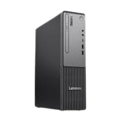
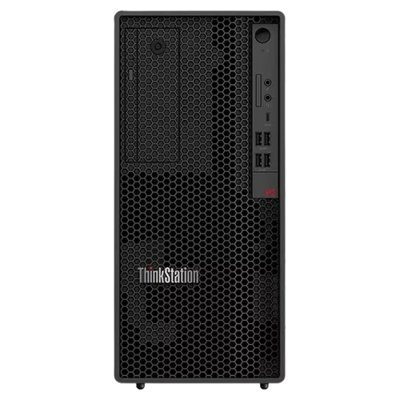
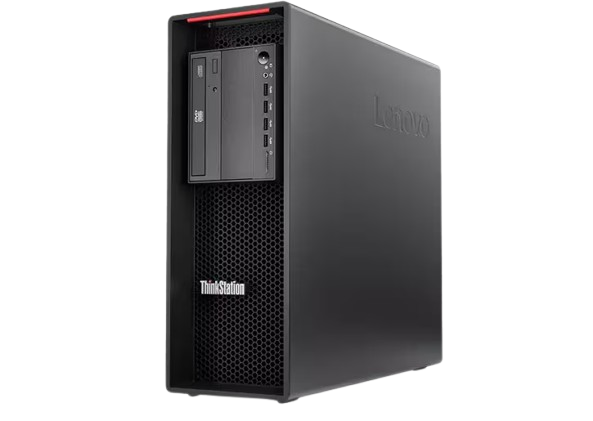
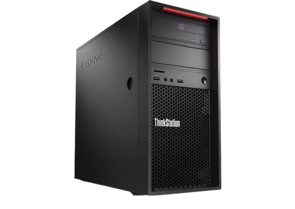

SonicPcs
ThinkCenter neo 50q
ThinkCentre neo 50q is an ultrasmall, 1-liter form factor business desktop PC designed for productivity in space-constrained environments. It is available in Gen 4 (Intel) and Gen 5 (Intel or Snapdragon) variants, offering different processor options and features. The ThinkCentre Neo 50q Gen 4 Tiny with a 13th Gen Intel Core i5 processor is a popular configuration that balances performance and efficiency.
ThinkCenter neo 50q
Form Factor: Tiny (1 liter volume), compact design (approx. 179 x 182.9 x 36.5 mm) which can be placed on a desk or VESA-mounted behind a monitor.
Processor: Up to 13th Gen Intel® Core™ i5-13420H mobile processor.
Memory: Up to 32GB DDR4 RAM across two SODIMM slots, allowing for upgrades.
Storage: Supports both an M.2 PCIe NVMe SSD and a 2.5-inch HDD for flexible storage options.
Graphics: Integrated Intel UHD Graphics, capable of supporting up to three simultaneous 4K monitors.
Connectivity: Features multiple ports, including USB-C 3.2 Gen 2, USB-A 3.2 Gen 2, USB 2.0, HDMI 2.1, DisplayPort 1.4, and Ethernet (RJ-45).
Networking: Includes Intel Wi-Fi 6 AX201 and Bluetooth 5.2 for fast wireless connectivity.
Operating System: Runs on Windows 11 Pro (or Free DOS on some models).
CPU
Intal I5 13 Gen
GPU
Intel UHD
Storage
1 TB hdd+128 GB SSD
RAM
32 GB of DDR5X/p>
OS
Windows 11 pro

SonicPcs
ThinkStation P2 Tower
ThinkStation P2 Tower specs and feathurs
The Lenovo ThinkStation P2 Tower is an entry-level professional workstation designed for demanding tasks such as CAD, engineering, and data analysis. It is highly configurable and built with enterprise-grade reliability and security features.
ThinkStation P2 Tower
ISV Certifications: The workstation is rigorously tested and certified to run major professional applications from vendors like AutoCAD®, SOLIDWORKS®, and ANSYS®, ensuring software stability and optimal performance.
Expandability: The system is designed for easy upgrades with tool-less access to internal components like memory, storage drives, and expansion cards. It features multiple PCIe expansion slots (including PCIe 5.0 x16 on Gen 2 models) and numerous drive bays.
AI Performance: The Gen 2 models are AI-ready, powered by Intel Core Ultra processors with an integrated Neural Processing Unit (NPU) and optional NVIDIA RTX Ada Generation GPUs, delivering significant AI acceleration capabilities.
Comprehensive Security: The ThinkStation P2 Tower includes the ThinkShield suite of security solutions, featuring a Trusted Platform Module (TPM) 2.0 chip for data encryption, a self-healing BIOS, and physical security slots.
Connectivity: It offers a wide array of front and rear ports, including USB-C® (up to 20Gbps on Gen 2), multiple USB-A ports (Gen 1 and Gen 2), Ethernet (RJ-45), DisplayPort™ 1.4, and HDMI® 2.1. Optional Wi-Fi and Bluetooth are also available.
CPU
Intel® Ultra 9
GPU
RTX™ 2000
Storage
4TB SSD+20 TB HDD
RAM
128GB DDR5
OS
Windows 11 pro

SonicPcs
ThinkStation P8
ThinkStation P8 is a high-performance, single-socket professional workstation powered by AMD Ryzen™ Threadripper™ PRO processors and designed for highly demanding, multi-threaded and GPU-intensive workloads. Its chassis was co-developed with Aston Martin, focusing on advanced thermal design and serviceability.
ThinkStation P8
The ThinkStation P8 features a single AMD Ryzen™ Threadripper™ PRO 7000 or 9000 WX-Series CPU with up to 96 cores and a max boost of 5.4 GHz, supporting Windows 11 Pro, Windows 11 Pro for Workstations, or select Linux distributions. It accommodates up to 1TB of DDR5 ECC RDIMM across 8 slots and supports various high-end GPUs, including up to three NVIDIA RTX™ 6000 Ada Generation or four NVIDIA RTX™ A4000, as well as AMD Radeon™ PRO W-series GPUs. Storage options include up to 8 M.2 NVMe SSDs and 3x 3.5" SATA HDDs, totaling up to 52TB, with 7 PCIe slots available for expansion. Power is provided by 1000W
CPU
AMD Ryzen™ Threadripper™
GPU
RTX™ 4000
Storage
52 TB
RAM
1 TB DDR 5
OS
Windows 11 pro

SonicPcs
ThinkStation PX
ThinkStation PX is a high-performance, modular workstation designed for demanding, multi-threaded workloads, featuring dual Intel Xeon Scalable processors and support for up to four professional NVIDIA RTX GPUs. Its chassis was co-designed with Aston Martin to optimize thermal efficiency and ease of access.
ThinkStation PX
Aston Martin-Inspired Chassis: The exterior design, co-designed with Aston Martin, emphasizes enhanced thermal architecture and airflow for maximum performance, with iconic red user touchpoints for tool-less access to serviceable components.
Modular and Tool-less Design: The workstation offers an innovative modular build with front-access, hot-swap drives and tool-less access for easy maintenance, upgrades, and expansion.
Rack-Optimized Flexibility: The chassis is designed for deployment either as a desktop tower or rack-mounted in a data center, with an optional Baseboard Management Controller (BMC) for full remote management capabilities.
ISV Certification: The ThinkStation PX is certified to run a wide range of professional design and engineering applications from vendors like Adobe, Autodesk, ANSYS, and Siemens, ensuring software stability and performance.
CPU
Intel® Xeon®
GPU
RTX Pro
Storage
60 tb SSD
RAM
2 TB DDR 5
OS
Windows 11 pro

SonicPcs
ThinkStation P520
ThinkStation P520 is a single-processor tower workstation designed for demanding professional workloads like 3D modeling, CAD, and simulations, offering extensive customizability and a tool-less design for easy upgrades.
ThinkStation P520
Tool-less Design: The P520 features a highly modular, tool-less chassis design that allows for simple installation and removal of components like drives, memory, and expansion cards, facilitating easy upgrades and maintenance.
ISV Certification: The workstation is certified to run mission-critical professional software from major vendors including Adobe, Autodesk, AVID, Bentley, Siemens, and more, ensuring application stability and optimized performance.
Tri-Channel Cooling: Lenovo's patented cooling technology helps manage internal airflow efficiently, keeping the system running smoothly and reliably even under heavy workloads.
Diagnostic Tools: The Lenovo Workstation Diagnostics app and Lenovo Performance Tuner software assist in monitoring system health, troubleshooting potential issues (even sending error codes to a smartphone), and fine-tuning performance for specific applications.
CPU
Intel® Xeon®
GPU
RTX 6000
Storage
4 TB SSD
RAM
512GB DDR5
OS
Windows 11

SonicPcs
ThinkStation P520c
ThinkStation P520c is a compact, single-processor tower workstation that balances performance and affordability for professional applications such as CAD, 3D modeling, and content creation. It uses Intel Xeon W-series processors and NVIDIA Quadro graphics in a smaller 25L chassis compared to the full P520 model.
ThinkStation P520c
Portability: The main selling point was its compact, cube-like design with an integrated handle, making it easier to transport than a traditional desktop tower.
Performance: Reviewers found that models with higher-end components (Core i7 and GTX 1070) offered solid 1080p and even entry-level 4K gaming performance. The base models (Core i3, GTX 1050 Ti) required adjusting game settings to run smoothly above 30 frames per second.
Upgradeability: The system has easy-access panels for upgrading RAM (two DIMM slots) and storage (2.5" and 3.5" bays available), but limited space for larger components.
CPU
Intel i7
GPU
GTX 1070
Storage
256 GB SSD
RAM
32 GB DDR5
OS
Windows 11 Pro